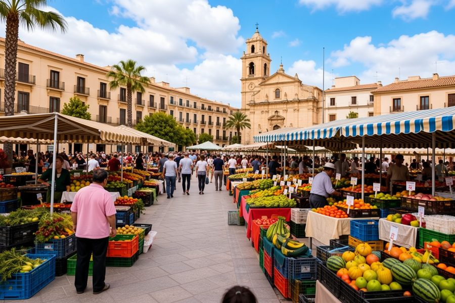
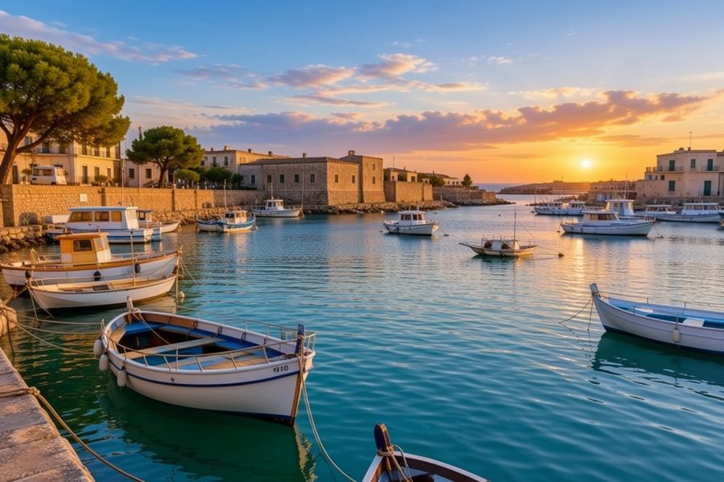

El ple aprova el pressupost del 2027
Els comptes municipals
pugen un 6 % i dupliquen la partida per arreglar
els carrers dels barris.
El ple va durar tres hores. L’equip de govern
hi va votar a favor, i l’oposició, en contra:
demana més inversió en habitatge i en transport
públic.

El mercat dels dilluns torna a la
plaça
Després de sis mesos d’obres, les parades
tornen al centre.

Porto Cristo estrena pantalans
Hi caben quaranta llaüts més.

El bàsquet guanya el derbi
78 a 71 en un pavelló ple.
Concert dins les coves
Música clàssica damunt el llac, divendres.

Nova ruta ciclista
Vint quilòmetres entre ametllers.